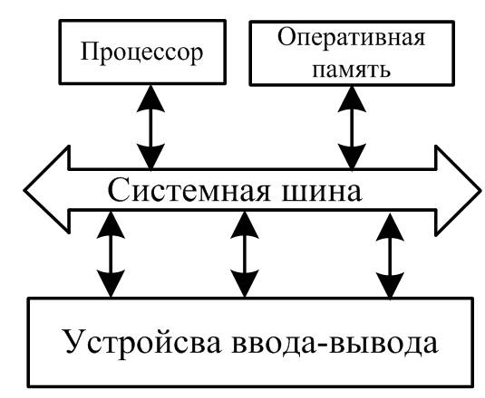
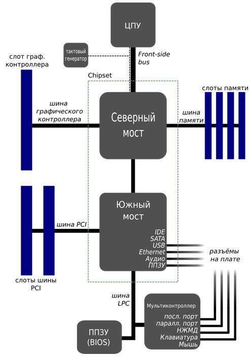

Устройство
ОЗУ (оперативное запоминающее устройство), оно же RAM ("Random Access Memory" - память с произвольным доступом), представляет собой область временного хранения данных, при помощи которой обеспечивается функционирование программного обеспечения. Физически, оперативная память в системе представляет собой набор микросхем или модулей (содержащих микросхемы), которые обычно подключаются к системной плате.
В процессе работы память выступает в качестве временного буфера (в ней хранятся данные и запущенные программы) между дисковыми накопителями и процессором, благодаря значительно большей скорости чтения и записи данных.
По своей структуре память напоминает пчелиные соты, т.е. состоит из ячеек, каждая из которых предназначена для хранения определенного объема данных, как правило, одного или четырех бит. Каждая ячейка оной имеет свой уникальный «домашний» адрес, который делится на два компонента – адрес горизонтальной строки (Row) и вертикального столбца (Column).
Ячейки представляют собой конденсаторы, способные накапливать электрический заряд. С помощью специальных усилителей аналоговые сигналы переводятся в цифровые, которые в свою очередь образуют данные.
Для передачи на микросхему памяти адреса строки служит некий сигнал, который зовется RAS (Row Address Strobe), а для адреса столбца — сигнал CAS (Column Address Strobe).
Как работает?
Работа оперативной памяти непосредственно связана с работой процессора и внешних устройств компьютера, так как именно ей последние «доверяют» свою информацию. Таким образом, данные сперва попадают с жесткого диска (или другого носителя) в саму ОЗУ и уже затем обрабатываются центральным процессором (смотрите изображение).

Обмен данными между процессором и памятью может происходить напрямую, но чаще все же бывает с участием кэш-памяти.
Кэш-память является местом временного хранения наиболее часто запрашиваемой информации и представляет собой относительно небольшие участки быстрой локальной памяти. Её использование позволяет значительно уменьшить время доставки информации в регистры процессора, так как быстродействие внешних носителей (оперативки и дисковой подсистемы) намного хуже процессорного.
Как следствие, уменьшаются, а часто и полностью устраняются, вынужденные простои процессора, что повышает общую производительность системы.
Оперативной памятью управляет контроллер, который находится в чипсете материнской платы, а точнее в той его части, которая называется North Bridge (северный мост) - он обеспечивает подключение CPU (процессора) к узлам, использующим высокопроизводительные шины: ОЗУ, графический контроллер (смотрите изображение).

Зависимость от ПО
Рассмотрим еще один важный аспект работы оперативки – это ее деление на несколько разделов с помощью специального программного обеспечения (ПО), которое поддерживается операционными системами.
Дело в том, что современные устройства оперативной памяти являются достаточно объемными, чтобы в ней можно было размещать данные от нескольких одновременно работающих задач. Процессор также может одновременно обрабатывать несколько задач. Это обстоятельство способствовало развитию так называемой системы динамического распределения памяти, когда под каждую обрабатываемую процессором задачу отводятся динамические (переменные по своей величине и местоположению) разделы оперативной памяти.
Динамический характер работы позволяет распоряжаться имеющейся памятью более экономно, своевременно «изымая» лишние участки памяти у одних задач и «добавляя» дополнительные участки – другим (в зависимости от их важности, объема обрабатываемой информации, срочности выполнения и т.п.). За «правильное» динамическое распределение памяти в ПК отвечает операционная система, тогда как за «правильное» использование памяти, отвечает прикладное программное обеспечение.
Совершенно очевидно, что прикладные программы должны иметь способность работать под управлением операционной системы, в противном случае последняя не сможет выделить такой программе оперативную память или она не сможет «правильно» работать в пределах отведенной памяти. Именно поэтому не всегда удается запустить под современной операционкой, ранее написанные программы, которые работали под управлением устаревших систем, например под ранними версиями Windows (98 например).
Ещё следует знать, что поддержка памяти зависит от разрядности системы, например, операционная система Windows 10, разрядностью 64 бита, поддерживает объем памяти до 192 Гбайт (младший 32-битный собрат "видит" не больше 4 Гбайт).